Servicios de Fontanería Urgente 24 Horas en Valencia
🚰 Localización y Reparación de Fugas 24h
Intervención inmediata ante roturas de tuberías, fugas de agua, humedades, llaves de corte general y acometidas en viviendas, locales y comunidades.
🌀 Desatascos Urgentes 24 Horas
Desatasco profesional de fregaderos, inodoros, duchas, desagües, arquetas y bajantes comunitarias con maquinaria específica sin romper.
🔥 Termos Eléctricos y Calentadores
Reparación, sustitución e instalación en el mismo día de termos eléctricos verticales/horizontales y calentadores de agua sanitaria.
🚽 Cisternas, Grifería y Sanitarios
Reparación de mecanismos descargadores de cisterna WC, llaves de escuadra, latiguillos, grifos monomando y platos de ducha.
Nuestros Técnicos y Trabajos Reales en Valencia
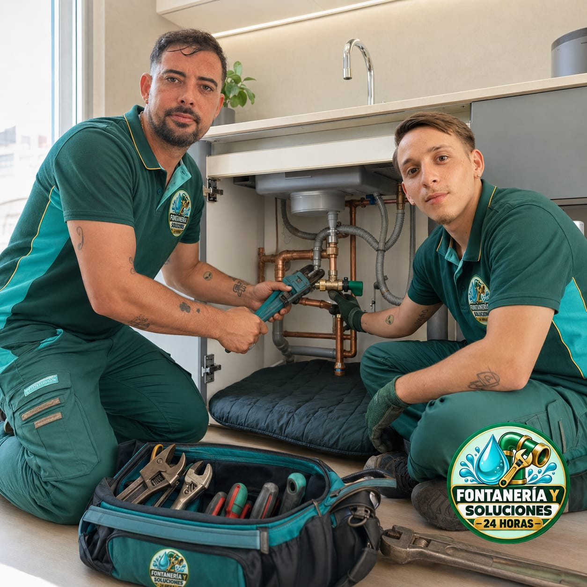
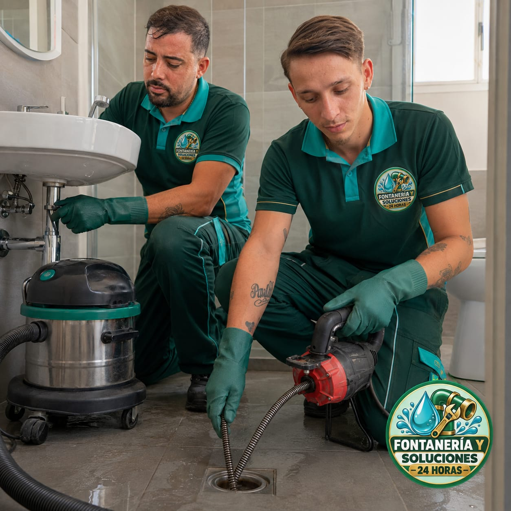
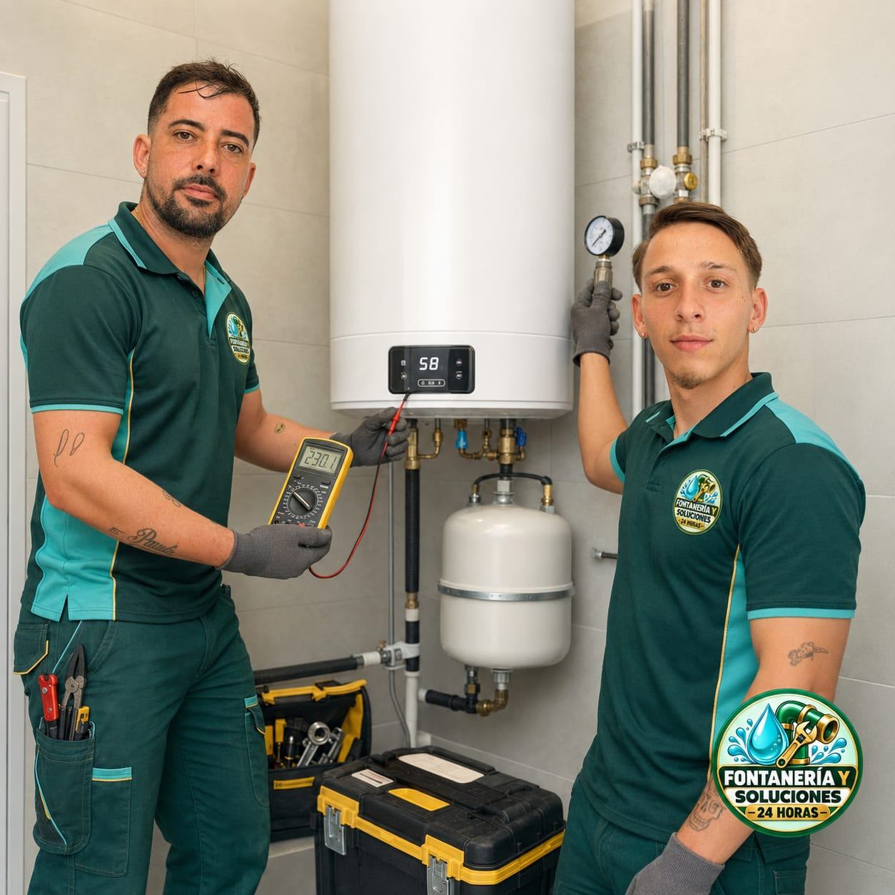
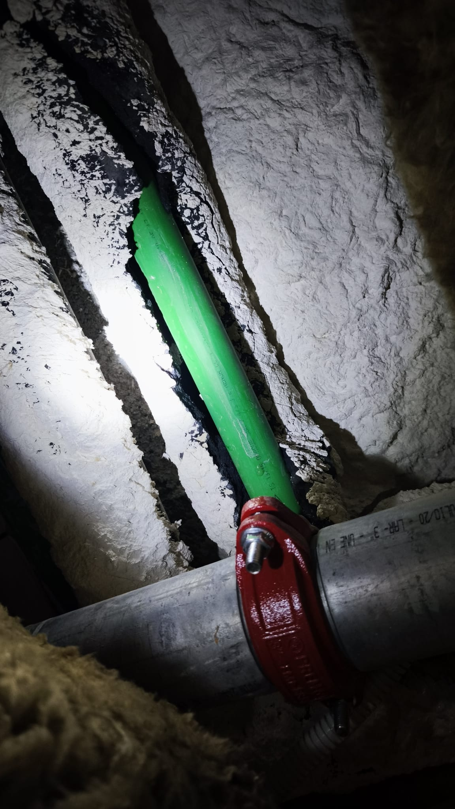
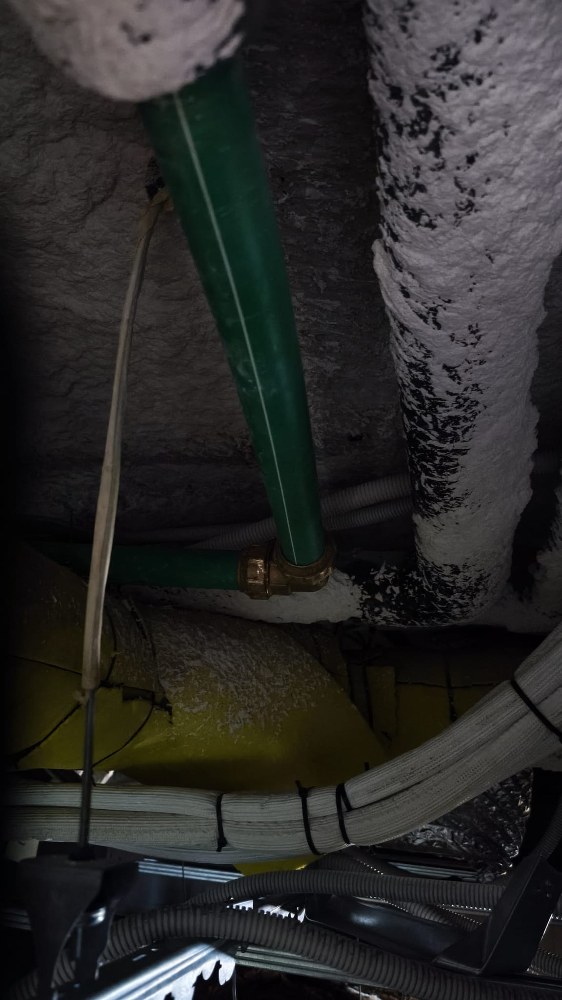
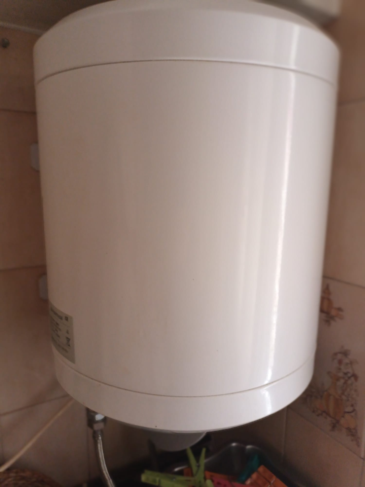
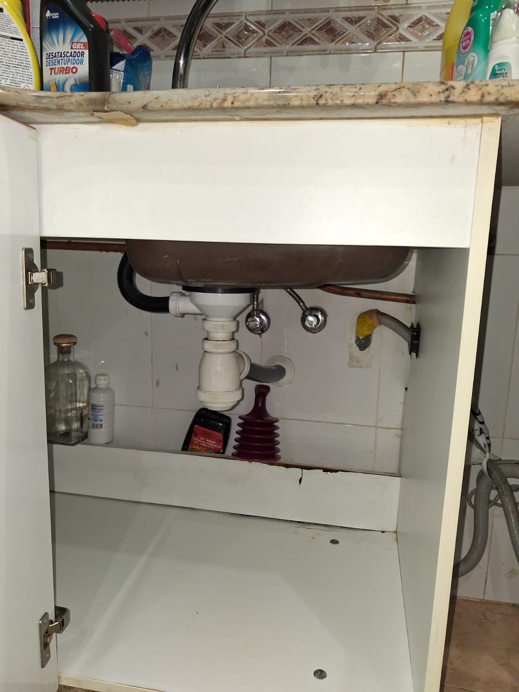
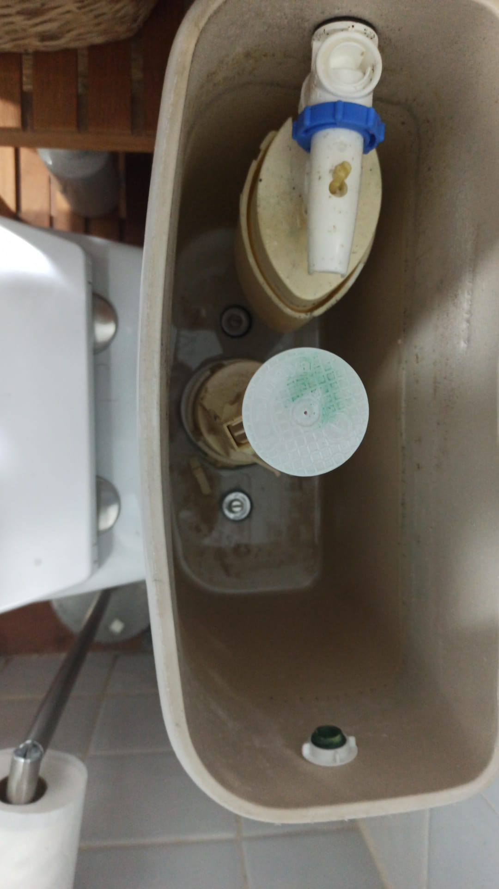
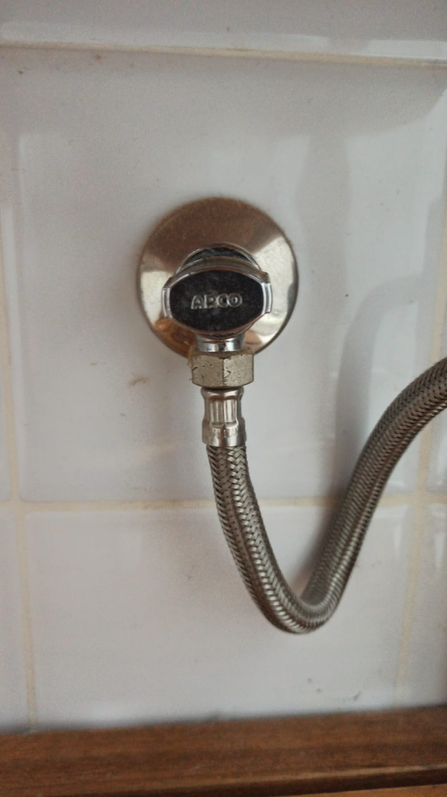
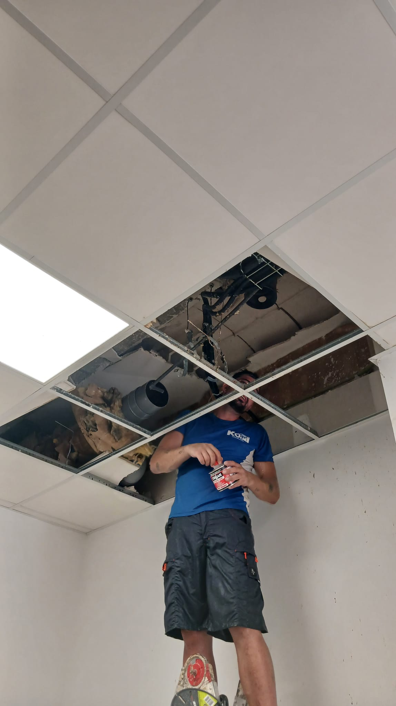
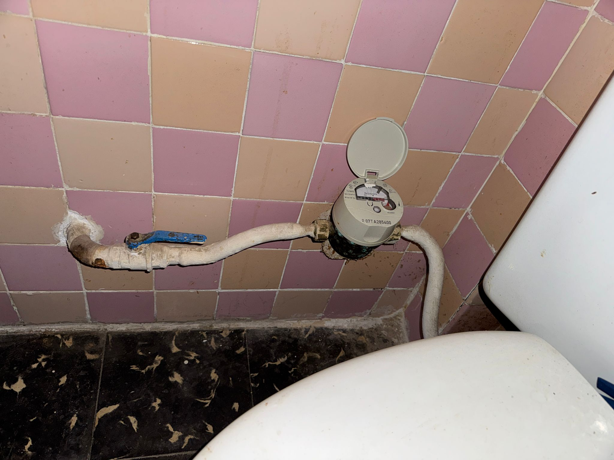
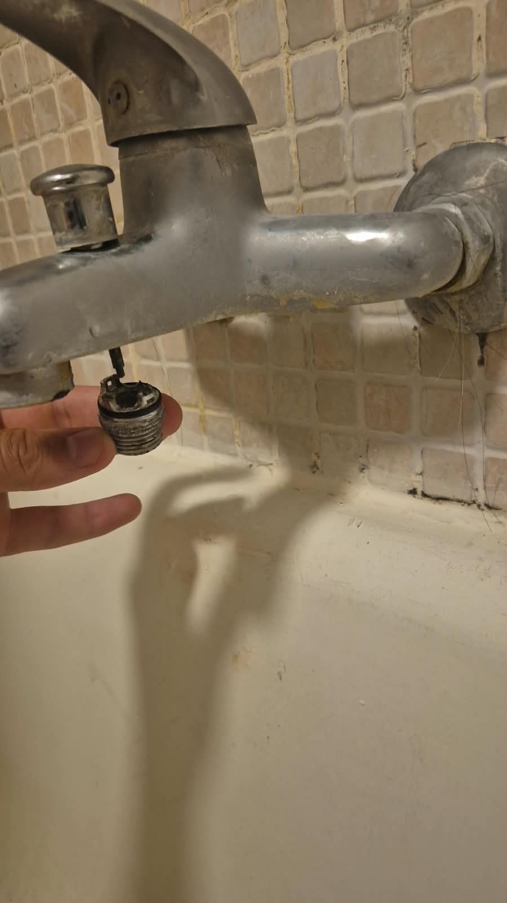